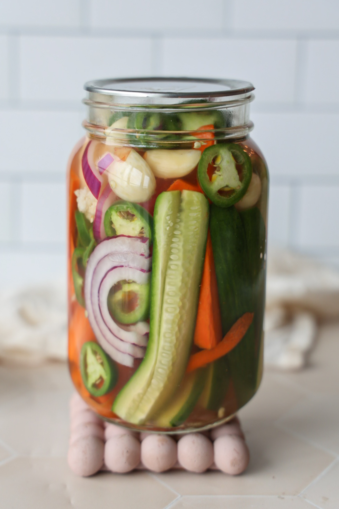

Use your locally grown veggies and make them last even longer!
Ingredients
- 1 pound of fresh vegetables (carrots, cucumbers, bell peppers, or a mix)
- 1 cup white vinegar
- 1 cup water
- 1 tablespoon salt (non-iodized)
- 1 tablespoon sugar (optional)
- 1 clove garlic (optional)
- 1 teaspoon whole peppercorns (optional)
- Fresh herbs (e.g., dill, thyme - optional)
Instructions
- Prepare the Vegetables: Wash and slice into sticks or rounds.
- Sterilize the Jar: Boil the mason jar to sterilize.
- Make the Brine: In a saucepan, combine vinegar, water, salt, and sugar. Bring to a boil until dissolved.
- Fill the Jar: Add vegetables, garlic, peppercorns, and herbs.
- Pour the Brine: Cover the vegetables with hot brine, leaving 1/2 inch of space at the top.
- Seal and Cool: Close the jar, cool to room temperature.
- Store: Refrigerate and enjoy within 2 months.